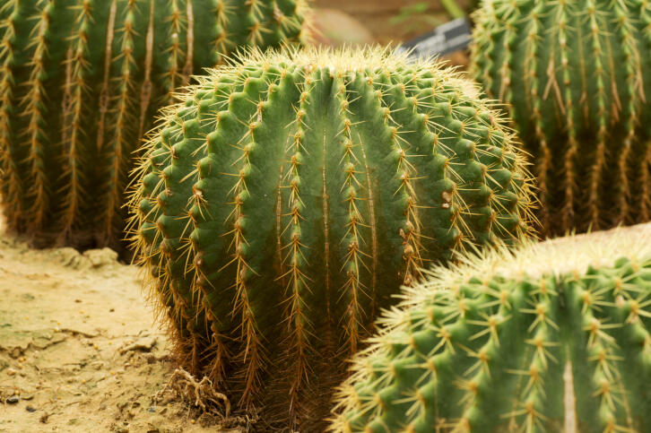

son unas hermosas plantas, pertenecientes a nuestro planeta tierra y sobrevivientes de los desiertos. Los cactus son originarios de América. Podemos encontrar cactus silvestres desde Canadá hasta la Tierra del Fuego (Argentina).
Los Cactus y otras Suculentas representan un grupo de fascinantes plantas. Ellos han desarrollado un mecanismo de defensa ante el inclemente calor y las largas temporadas de sequía que en su lugar de vivienda se originan.
los cactus almacenan el agua en sus tallos, abren sus pequeñas y muy pegadas hojas para que el agua entre a toda la planta, esto lo hacen únicamente durante la noche. los cactus economizan el agua y pueden subsistir en condiciones increíbles de sequía y calor.
